Quantum Condensed Matter Physics
笹本 大樹
Daiki Sasamoto
Daiki Sasamoto
東北大学大学院 理学研究科 物理学専攻
固体統計物理学講座（物性理論研究室）那須グループ 博士後期課程3年。
物性物理学の理論研究を行っています。
Ph.D. student (3rd year), Nasu Group, Condensed Matter Theory,
Department of Physics, Graduate School of Science, Tohoku University.
I work on theoretical condensed matter physics.
お知らせNews
- 2026.07.13 ホームページを開設しました。Launched this homepage.
- 2026.06.19 物性理論合同セミナー（東北大学）で "Spin dynamics in kagome spin liquids" について発表しました。Gave a talk "Spin dynamics in kagome spin liquids" at the Condensed Matter Theory Joint Seminar, Tohoku University.
- 2026.06 ミュンヘン工科大学の Johannes Knolle 教授のグループを訪問しました。Visited the group of Prof. Johannes Knolle at TU Munich.
- 2026.04.17 ケルン大学の CMT Group Seminar で発表しました。Gave a talk at the CMT Group Seminar, University of Cologne.
- 2026.03 日本物理学会 2026年春季大会で口頭発表を2件行いました。Gave two oral presentations at the JPS 2026 Spring Meeting.
- 2025.12 ケルン大学 Simon Trebst 教授のグループで半年間の海外研修を開始しました（–2026.05）。Started a six-month research stay in the group of Prof. Simon Trebst, University of Cologne (–May 2026).
- 2025.10 国際ワークショップ TTQM2025（埼玉大学）でポスター発表を行いました。Presented a poster at TTQM2025, Saitama University.
- 2025.09 日本物理学会 第80回年次大会（広島大学）で口頭発表を行いました。Gave an oral presentation at the JPS 80th Annual Meeting, Hiroshima University.
- 2025.07 強相関電子系国際会議 SCES2025（カナダ・モントリオール）でポスター発表を行いました。Presented a poster at SCES 2025, Montreal, Canada.
- 2025.06 研究会「創発量子現象の凝縮系物理の新展開」（京都大学基礎物理学研究所）で口頭発表を行いました。Gave an oral presentation at the workshop on emergent quantum phenomena, YITP, Kyoto University.
- 2025.05 フラストレート磁性国際会議 HFM2025（カナダ・トロント）でポスター発表を行いました。Presented a poster at HFM2025, Toronto, Canada.
- 2025.05 学術変革領域研究(A)「キメラ準粒子」領域会議（東北大学）でポスター発表を行いました。Presented a poster at the Chimera Quasiparticles project meeting, Tohoku University.
- 2025.03 日本物理学会 2025年春季大会で口頭発表を行いました。Gave an oral presentation at the JPS 2025 Spring Meeting.
- 2025.03 ISSP Workshop「カゴメフラストレート磁性研究の進展」（東京大学物性研究所）でポスター発表を行いました。Presented a poster at the ISSP Workshop on kagome frustrated magnetism, University of Tokyo.
- 2024.08 量子物性若手交流研究会（静岡県熱海市）で口頭発表を行いました。Gave an oral presentation at the young researchers' workshop on quantum matter, Atami.
- 2024.08 磁性国際会議 NFAM2024（北海道大学）でポスター発表を行いました。Presented a poster at NFAM2024, Hokkaido University.
- 2024.04 東北大学 那須グループの博士後期課程学生として研究を開始しました。GP-Spin プログラムにも所属しています。Started my Ph.D. in the Nasu Group, Tohoku University. Also joined the GP-Spin program.
自己紹介About
東北大学大学院 理学研究科 物理学専攻 固体統計物理学講座（物性理論研究室）
那須グループの博士後期課程3年です。
量子多体系のダイナミクスに興味を持って研究を行っています。
中でも強相関電子系に強い関心があり、分野全体を広く見渡せるよう日々勉強を続けています。
もっとも、博士課程での主な研究対象は、遍歴電子系というよりは量子スピン系（局在電子系）で、
とりわけ量子スピン液体状態に興味があります。
スピンの分数化励起を記述する際に現れる格子ゲージ理論的な見方が気に入っており、
研究の手法としても用いています。
時間があれば、より細かい自己紹介をここに書きたいと思います…（工事中）
I am a third-year Ph.D. student in the Nasu Group, Condensed Matter Theory
(Solid-State Statistical Physics), Department of Physics, Graduate School of Science,
Tohoku University. My research interest lies in the dynamics of quantum many-body systems.
I am especially drawn to strongly correlated electron systems, and I keep studying to
gain a broad perspective on the field. That said, the main subject of my Ph.D. research
is quantum spin systems (localized electron systems) rather than itinerant electrons,
with a particular focus on quantum spin liquid states. I am fond of the
lattice-gauge-theoretical viewpoint that emerges in describing fractionalized spin
excitations, and I use it as a working tool in my research.
A more detailed introduction will be written here someday... (under construction)
- 2026.06 ミュンヘン工科大学（ドイツ）Johannes Knolle 教授のグループを訪問 Visited the group of Prof. Johannes Knolle, Technical University of Munich, Germany
- 2025.12 – 2026.05 ケルン大学（ドイツ）Simon Trebst 教授の下で海外研修 Visiting researcher in the group of Prof. Simon Trebst, University of Cologne, Germany
- 2024.04 – 現在Present 東北大学スピントロニクス国際共同大学院プログラム（GP-Spin）にプログラム生として所属 Program student, Graduate Program in Spintronics (GP-Spin), Tohoku University
- 2024.04 – 現在Present 東北大学 大学院理学研究科 物理学専攻 博士後期課程（指導教員: 那須譲治） Ph.D. Course, Department of Physics, Tohoku University (Supervisor: Assoc. Prof. Joji Nasu)
研究Research
より詳しい研究内容はこちら →Read more about my research →
量子スピン液体Quantum Spin Liquids
磁気秩序を持たないまま量子揺らぎによって強く絡み合ったスピン状態——量子スピン液体——の 性質を研究しています。特に、量子スピン液体が有限温度で示すスピンダイナミクスに興味があります。 手法としては、Schwinger boson法・Abrikosov fermion法・Majorana fermion法に 代表されるParton構成法を用いており（特にSchwinger boson法がお気に入りです）、 最近ではParton平均場理論を超えた多体摂動論に興味を持っています。 また、分数化した準粒子のバンドトポロジーに由来する熱応答にも関心があります。
I study quantum spin liquids — highly entangled spin states that evade magnetic order due to strong quantum fluctuations. I am particularly interested in the spin dynamics that quantum spin liquids exhibit at finite temperatures. My main tools are parton constructions such as the Schwinger boson, Abrikosov fermion, and Majorana fermion methods (the Schwinger boson approach is my favorite), and I am currently interested in many-body perturbation theory beyond parton mean-field theory. I am also interested in thermal responses originating from the band topology of fractionalized quasiparticles.
量子情報Quantum Information
ケルン大学での海外研修中に、Simon Trebst 教授の下で観測誘起ダイナミクス （monitored dynamics）を学びました。この分野で重要な役割を果たす量子誤り訂正について 学ぶうちに、それがスピングラスの物理（西森転移）と深く結びついていることを知り、 物理の概念が分野を越えて生き生きと繋がっていく面白さを実感しました。 より深く理解するために、今後も学びを続けていきたいと考えています。
During my research stay at the University of Cologne, I studied monitored quantum dynamics under Prof. Simon Trebst. While learning about quantum error correction, which plays a central role in this field, I discovered its deep connection to the physics of spin glasses (the Nishimori transition) — a striking example of how physical concepts come alive across different fields. I plan to keep studying this area to deepen my understanding.
研究キーワードResearch Keywords
量子スピン系 — 対象・現象Quantum Spin Systems — Topics
量子スピン系 — 手法Quantum Spin Systems — Methods
量子情報Quantum Information
業績Publications & Talks
学術論文Journal Articles 研究内容の解説 →About this research →
-
Daiki Sasamoto and Takao Morinari,
"General Formula for the Green's Function Approach to the Spin-1/2 Antiferromagnetic Heisenberg Model",
J. Phys. Soc. Jpn. 93, 024704 (2024)
プレプリントPreprints 研究内容の解説 →About this research →
-
Daiki Sasamoto and Joji Nasu,
"Dynamical spin correlations in kagome antiferromagnets: comparison of Abrikosov fermion and Schwinger boson approaches beyond mean field",
arXiv:2603.21513 (2026) -
Daiki Sasamoto and Joji Nasu,
"Schwinger boson theory for S=1 Kitaev quantum spin liquids",
arXiv:2509.25761 (2025)
国際会議発表International Conferences
-
"Schwinger boson theory for S=1 Kitaev quantum spin liquids",
D. Sasamoto and J. Nasu:
Trends in the Theory of Quantum Materials (TTQM) 2025, Saitama University, Japan, October 20–22, 2025 (poster) -
"Analysis of quantum spin liquid in the integer-spin Kitaev magnets using the Schwinger boson approach",
D. Sasamoto and J. Nasu:
International Conference on Strongly Correlated Electron Systems (SCES 2025), Montreal, Canada, July 6–11, 2025 (poster) -
"Analysis of the Kitaev-Gamma Model Using the Schwinger Boson Approach",
D. Sasamoto and J. Nasu:
The 13th International Conference on Highly Frustrated Magnetism (HFM2025), Toronto, Canada, May 25–30, 2025 (poster) -
"General formula for the Green's function approach to the spin-1/2 antiferromagnetic Heisenberg model",
D. Sasamoto and T. Morinari:
New Frontiers in Advanced Magnetism 2024 (NFAM2024), Sapporo, Japan, August 5–9, 2024 (poster)
セミナー発表Seminars
-
"Spin dynamics in kagome spin liquids",
Daiki Sasamoto:
Condensed Matter Theory Joint Seminar, Room 745, Science Complex B, Graduate School of Science, Tohoku University, Japan, June 19, 2026 -
"Spin Dynamics in Quantum Spin Liquids: A Spinon Perspective",
Daiki Sasamoto:
CMT Group Seminar, Institute for Theoretical Physics, University of Cologne, Germany, April 17, 2026
国内会議発表（口頭）Domestic Conferences — Oral (in Japanese)
-
「Abrikosov fermion法を用いた拡張Kitaev模型の有限温度スピンダイナミクス」
笹本大樹, 那須譲治:
日本物理学会 2026年春季大会, 25aC1-11, Zoom, 2026年3月23日–26日 -
「Schwinger boson法を用いたカゴメ反強磁性体のスピンダイナミクス」
笹本大樹, 那須譲治:
日本物理学会 2026年春季大会, 25aC1-12, Zoom, 2026年3月23日–26日 -
「Schwinger boson法を用いたS=1 Kitaev模型の有限温度スピンダイナミクスの解析」
笹本大樹, 那須譲治:
日本物理学会 第80回年次大会, 18pSK313-4, 広島大学, 2025年9月16日–19日 -
「S=1 Kitaev量子スピン液体の有限温度スピンダイナミクス」
笹本大樹, 那須譲治:
研究会「創発量子現象の凝縮系物理の新展開」, 京都大学基礎物理学研究所, 2025年6月25日–27日 -
「Schwinger boson法を用いたハニカム格子上の量子スピン液体の解析」
笹本大樹, 那須譲治:
日本物理学会 2025年春季大会, 18aC1-11, Zoom, 2025年3月18日–21日 -
「任意の局在模型における有限温度ダイナミクスの計算手法構築」
笹本大樹, 那須譲治:
量子物性若手交流研究会, ホテル・サンミ倶楽部（静岡県熱海市）, 2024年8月27日–29日 -
「グリーン関数の運動方程式を用いた量子スピン系の理論とその応用」
笹本大樹, 森成隆夫:
日本物理学会 第78回年次大会, 18aB103-2, 東北大学, 2023年9月16日–19日
国内会議発表（ポスター）Domestic Conferences — Poster (in Japanese)
-
「量子スピン液体のbosonic励起を用いた有限温度ダイナミクスの理論」
笹本大樹, 那須譲治:
学術変革領域研究(A)「キメラ準粒子が切り拓く新物性科学」領域会議, 東北大学, 2025年5月22日–23日 -
「Schwinger boson法を用いたハニカム格子上の量子スピン液体の解析」
笹本大樹, 那須譲治:
ISSP Workshop 2024「カゴメフラストレート磁性研究の進展」, 東京大学物性研究所, 2025年3月10日–11日
おすすめ論文Recommended Papers
個人的に面白かった・お世話になった論文を紹介していきます。 Papers that I have personally found interesting or helpful.
Hall Effect in Ferromagnetics
R. Karplus and J. M. Luttinger, Phys. Rev. 95, 1154 (1954)
強磁性体の異常ホール効果を説明するために、電子の群速度に現れる「異常速度（anomalous velocity）」を 導いた歴史的な論文です。今日の言葉で言えば、これはまさに Berry 曲率が電子輸送に及ぼす効果そのもの。 Berry 位相という一般概念が定式化される（M. V. Berry, Proc. R. Soc. A 392, 45 (1984)） 30年も前に、k 空間の Berry 曲率がもたらす輸送効果を発見していた——この事実には震えます。 概念に名前が与えられるより先に、物理はそこにあったのだと実感させてくれる論文です。
A historic paper that derived the "anomalous velocity" in the electron group velocity to explain the anomalous Hall effect in ferromagnets. In today's language, this is nothing but the effect of the Berry curvature on electron transport. What gives me chills is that they discovered the transport effect of the Berry curvature in k-space a full 30 years before the general concept of the Berry phase was formulated (M. V. Berry, Proc. R. Soc. A 392, 45 (1984)). A paper that reminds us: the physics was there long before it had a name.
おすすめ教科書Recommended Textbooks
個人的に面白かった・お世話になった教科書を紹介していきます。 Textbooks that I have personally found interesting or helpful.
（きっと多くの物理学徒に共通することだと思いますが）研究のために読み始めたはずの専門書なのに、 いつの間にか読むこと自体にはまってしまう——そんなことがあると思います。 私もその一人で、これまでかなりの数の本を読んできました（つまみ読みも含めて）。 せっかくなので、読んできた本を少しずつ紹介していこうと思います。特にお気に入りのものを。 (As is probably true for many physics students,) books you pick up for the sake of research have a way of pulling you in, until reading monographs becomes a pleasure in itself. I am one of those people, and I have read quite a few books over the years (skimming included). So I would like to introduce some of them here — my favorites in particular.
固体物理学（基礎）Solid State Physics (Basics)
固体物理学〈上・中・下〉（物理学叢書）— シリーズ全体について固体物理学 Vols. 1–3 — About the Series
G. グロッソ, G. パストリ・パラヴィチーニ, 吉岡書店 G. Grosso and G. Pastori Parravicini, Yoshioka Shoten
G. Grosso と G. P. Parravicini による Solid State Physics の日本語版で、 上・中・下巻の3冊構成、あわせて950ページほどあります。全部読み切るにはかなりの体力が要ります。 とはいえ内容は、固体物理学の予備知識なしで読み進められる入門的な立ち位置の本で、 式変形も丁寧に記されており、自学に向いています。
この種の本では、C. Kittel『固体物理学入門』と Ashcroft / Mermin『固体物理の基礎』が、 物性物理を学ぶ学生・研究者にとってバイブル的な地位を占めています。原著の出版年は Kittel が1953年、Ashcroft / Mermin が1976年、Grosso / Parravicini が2000年。 つまり本書は、伝統的・網羅的なスタイルの固体物理の教科書としては非常に新しい一冊です。 私はこの3つの中では Grosso / Parravicini が一番のお気に入りです。
The Japanese edition of Solid State Physics by G. Grosso and G. P. Parravicini, published in three volumes totaling about 950 pages — reading it cover to cover takes real stamina. That said, it is positioned as an introductory text that requires no prior knowledge of solid state physics, with derivations worked out carefully, making it well suited to self-study.
In this genre, Kittel's Introduction to Solid State Physics and Ashcroft & Mermin's Solid State Physics hold near-biblical status among students and researchers. Their first editions date from 1953 and 1976, while Grosso & Parravicini appeared in 2000 — making this by far the most modern of the traditional, comprehensive solid state textbooks. Of the three, it is my favorite.
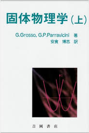
固体物理学〈上〉（物理学叢書）固体物理学〈上〉 (Solid State Physics, Vol. 1)
G. グロッソ, G. パストリ・パラヴィチーニ, G. Grosso and G. Pastori Parravicini, 吉岡書店
上巻は基本的な内容を扱っているので、基礎力強化のために何度でも読み直す価値があります （特に第4章まで）。
大学院生にもなると「第二量子化表示に慣れればよい」という風潮があり、 Hartree-Fock近似や、そこで学ぶべきクーロン項（直接積分）・交換項（交換積分）の概念を 第二量子化の言葉だけで理解している場合が多いように思います。しかし、これらを波動関数の言葉 ——Hartree-Fock近似なら single Slater determinant による多体変分波動関数——で 理解しておくことはとても大事で、両者が同じものだと分かって初めて第二量子化の利点に 気づけるのだと思っています。その意味で、本書の第4章はとても教育的です。
第5章は、5.3のOPW法から5.7のKKR法あたりはややマニアックな印象ですが、 ここまで丁寧な導出が付いているのは珍しく、第一原理計算の裏側を知れて楽しい部分です。 5.8.4の電子系の繰り込みはとても大事な概念で、これも丁寧に説明されていて大変ありがたい。 この前提知識があると、金属における Cooper pair の理解がすんなり進みます。
Volume 1 covers the fundamentals and is worth revisiting again and again (especially up to Chapter 4).
By graduate school there is a tendency to be content with second quantization, so many of us understand the Hartree-Fock approximation and the concepts it teaches — the Coulomb (direct) and exchange integrals — only in second-quantized language. But I find it very important to also understand them in the language of wave functions (for Hartree-Fock, a many-body variational wave function given by a single Slater determinant); only when you see that the two are the same thing do you truly appreciate the advantages of second quantization. In that sense, Chapter 4 of this book is wonderfully pedagogical.
In Chapter 5, the stretch from the OPW method (5.3) to the KKR method (5.7) feels a bit specialized, but derivations this careful are rare, and it is fun to see behind the scenes of first-principles calculations. The renormalization of electronic states in 5.8.4 is a crucial concept, also explained with great care — with this background, understanding Cooper pairs in metals comes naturally.
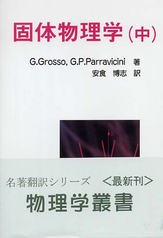
固体物理学〈中〉（物理学叢書）固体物理学〈中〉 (Solid State Physics, Vol. 2)
G. グロッソ, G. パストリ・パラヴィチーニ, G. Grosso and G. Pastori Parravicini, 吉岡書店
第7章では金属の誘電応答に焦点が当てられ、いわゆる Lindhard 関数が登場します。 大学院生になると Green 関数（あるいは Feynman ダイアグラム）から華麗に導出するのを習いますが、 そうしたテクニカルな道具に頼らなくても、摂動論（フェルミの黄金律）から導くことができます。 初めから Green 関数に頼るより、多少泥臭くてもこうした導出を経験しておいた方が 物理が分かる気がして、個人的にはとても有意義に感じます。
第8章では電子-原子核系と断熱原理が解説されますが、Jahn-Teller 効果の説明が端的で とても分かりやすいです。Jahn-Teller 効果というと、群論を用いた配位子場理論を マスターしないと理解できないような雰囲気があります（実際、配位子場理論はとても大事です）。 一方で、現象そのもの——雑に言えば、分子や結晶の対称性が高く、エネルギーの等しい 縮退軌道が存在すると、その構造が自発的に歪む現象——を大掴みに理解するには 本書を読むだけで十分ですし、読めば逆に、なぜ群論的な理解が必要なのかという モチベーションも見えてきます。
特に感動的なのは、8.5のパラメータを含むハミルトニアンと Berry 位相についての解説です。Jahn-Teller 効果の議論が幾何学的 Berry 位相の立場から 見直せる——私はこの本を通じてその事実に気付かされました。 さらに8.6では電気分極と Berry 位相が扱われます。今でこそこの関係は複数の トポロジカル物性の教科書で言及されていますが、固体物理の教科書で基礎を身につけながら こうした発展的な概念まで学べるのはとてもよいことだと思います。
第9章は比較的標準的な格子振動の話です。ただし、付録Aの線形調和振動子の量子論の補足に 出てくる Weyl の恒等式や Bloch の恒等式は、一見ただの算数なのですが、後々ほかの本で 勉強を進めると、これがキュムラント展開に対応し、さらに摂動論で使う Wick 分解と つながっていることに気づきます。片隅の知識が繋がるこの感覚はとても面白いものでした。
第11章の金属の光学的性質と輸送現象は、下で紹介している浅野先生『固体電子の量子論』の 第8章「物質の電磁気学」・第9章「金属の電気伝導と光学応答」と相性がよく、 互いに相補的な記述になっています。比較しながら読むととても勉強になりました。
Chapter 7 focuses on the dielectric response of metals, where the Lindhard function makes its appearance. In graduate school one learns to derive it elegantly from Green's functions (or Feynman diagrams), but it can also be obtained without such technical machinery, from perturbation theory (Fermi's golden rule). I find it very worthwhile to go through this somewhat down-to-earth derivation before relying on Green's functions — it gives you a better feel for the physics.
Chapter 8 treats the electron-nucleus system and the adiabatic principle, with a remarkably clear and compact explanation of the Jahn-Teller effect. The Jahn-Teller effect has an aura of requiring mastery of group theory and ligand field theory (which is indeed important), but for a first understanding of the phenomenon itself — roughly, that a highly symmetric molecule or crystal with degenerate orbitals spontaneously distorts — this book alone is quite sufficient, and reading it also motivates why the group-theoretical understanding is needed.
What moved me most is Section 8.5 on Hamiltonians with parameters and the Berry phase: the Jahn-Teller problem can be revisited from the viewpoint of the geometric Berry phase — a fact this book made me realize. Section 8.6 then covers electric polarization and the Berry phase. Nowadays this connection appears in several textbooks on topological matter, but it is a great thing to encounter such advanced concepts while building up the basics in a solid state physics textbook.
Chapter 9 is a fairly standard account of lattice vibrations — though the Weyl and Bloch identities in Appendix A's supplement on the quantum harmonic oscillator, seemingly mere arithmetic, later turn out to correspond to the cumulant expansion and, further, to the Wick decomposition used in perturbation theory. The moment these scattered pieces of knowledge connect is a real delight.
Chapter 11 on the optical and transport properties of metals pairs beautifully with Chapters 8 and 9 of Asano's 固体電子の量子論 (introduced below); the two accounts are complementary, and reading them side by side taught me a lot.
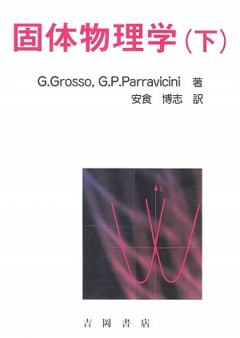
固体物理学〈下〉（物理学叢書）固体物理学〈下〉 (Solid State Physics, Vol. 3)
G. グロッソ, G. パストリ・パラヴィチーニ, G. Grosso and G. Pastori Parravicini, 吉岡書店
下巻は第16章と第17章しか読んでいませんが、その範囲だけでも紹介したいことが多くあります。
第16章では、16.5から展開される近藤問題の説明がかなり平易に書かれており、 近藤問題を勉強するときに最初に読む文献としておすすめです。 16.6.3では、近藤相互作用の微視的な起源を「分子模型」というシンプルな模型で解説していて、 近藤現象の本質的な性質が浮き彫りになり面白いです。さらに16.7では、 上巻5.8.4の電子系の繰り込み法を用いて、極低温での一重項束縛状態の形成が 理解できるように工夫されています。
第17章は比較的標準的な磁性の解説です。この手の初歩的な固体物理の教科書として 珍しいと思うのは、17.6で Ising 模型を例にした繰り込み群理論が紹介されている点です。 内容は初歩的ですが、初めて勉強する場合には丁寧で参考になると思います。
I have only read Chapters 16 and 17 of Volume 3, but even that much gives me plenty to recommend.
In Chapter 16, the discussion of the Kondo problem developed from Section 16.5 is written in remarkably plain terms — I would recommend it as the first thing to read when studying the Kondo problem. Section 16.6.3 explains the microscopic origin of the Kondo interaction using a simple "molecular model," which nicely lays bare the essential nature of the Kondo effect. Section 16.7 then uses the renormalization method for electronic states from Vol. 1 (Section 5.8.4) to make the formation of the singlet bound state at very low temperatures accessible.
Chapter 17 is a fairly standard account of magnetism. What is unusual for an introductory solid state textbook of this kind is Section 17.6, which introduces renormalization-group theory using the Ising model as an example. The treatment is elementary, but careful enough to be a helpful first encounter with the subject.
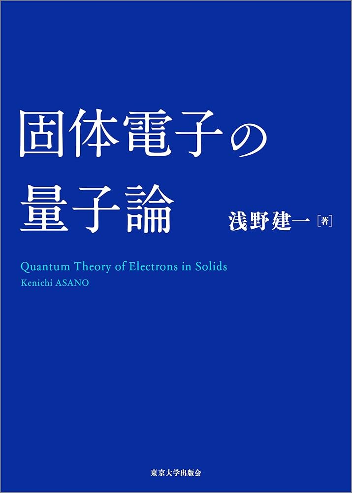
固体電子の量子論固体電子の量子論 (Quantum Theory of Electrons in Solids)
浅野建一, K. Asano, 東京大学出版会
全体で500ページほど、物性物理学の研究を志す学部生・大学院生を対象とした本です。 「この本はあくまで辞書代わり」という評価（もちろん否定的な意味ではなく、 使い方についての意見でしょう）が Amazon レビューをはじめ散見されますが、 私は、この本で勉強するなら1ページ目から全部フォローするべきだと思っています。 決してつまみ読みできる類の本ではありません。例えば第III部の固体の電磁応答は、 第I部第4章の線形応答の量子論を読んでいることが前提ですし、 第9〜11章の電気伝導や光学応答も、第8章で導入される電磁応答核の議論なしには 理解できないはずです。
一方でこの本のすごいところは、緒言で著者自身が述べているように、 教科書として自己完結しており、概念や手法を身につけるのに他書を参照する必要がない 構成になっていることです。第I部から順に読んでいくと、読み切ったあとに、 本当にその言葉どおりの自己完結型の専門書であることに気づきます。
なお、Feynman ダイアグラムを用いた摂動論は本書では扱われません。 これも緒言で著者が述べているように、Green 関数の摂動論を学ぶ際には 計算技法にばかり目が行き、肝心の物理的意味を見失いがちです （この見解は真っ当で、多くの大学院生が陥る罠だと思っています）。 基礎的な線形応答（久保公式）の理解から金属の誘電応答（Lindhard 関数など）が どのように導かれるのか、そしてその応答関数からどんな物理現象が導かれるのか—— Green 関数に頼らずに本書で身につけておくことが、 後々ダイアグラムを理解する際の大きな助けになるはずです。
本書の特徴のひとつは線形応答理論だと思います。第4章の解説はとても明快で、 適用上の注意点や、他書なら脚注に回るような事柄まで懇切丁寧に書かれています。 カノニカル相関を用いた久保公式の表現など、教科書では細かく説明されないのに 論文ではよく出会うものまで、きちんと導出付きで紹介されているのが大変ありがたい。
第III部の固体の電磁応答も丁寧に理論が展開されていて、読んでいてとても楽しい部分です。 最終的に Drude 重みと Meissner 重みの考え方がすっきり理解できるようになっていて、 第8章は個人的にこの本で一番好きな章です。
第VI部の量子Hall効果も大変勉強になりました。 量子Hall効果に興味を持ったら、まずこの二章分を読むことをおすすめします。 第18章は整数量子Hall効果で、Widom-Středa 公式のような「教科書では細かく説明されないが 論文ではよく出会う」ものの解説がしっかり書かれているのがありがたい。 第19章の分数量子Hall効果も、本質を掴むにはまずこの本から入るのが最速だと思っています。 本当に本質的で大事なことが30ページほどで、しかも大変丁寧な説明と計算過程付きで コンパクトにまとまっています。
A book of roughly 500 pages aimed at undergraduate and graduate students heading into condensed matter research. One often sees the assessment — on Amazon reviews and elsewhere — that this book is "best used as a reference" (not a negative judgment, of course, just an opinion about usage). I disagree: if you study from this book, you should follow it from page one. It is not a book for cherry-picking. For instance, Part III on the electromagnetic response of solids presupposes the quantum theory of linear response in Chapter 4, and Chapters 9–11 on conduction and optical response cannot be understood without the response-kernel discussion of Chapter 8.
What is remarkable, as the author himself notes in the preface, is that the book is completely self-contained — you never need another reference to master its concepts and methods. Read it in order from Part I, and by the end you realize the claim is literally true.
Perturbation theory with Feynman diagrams is deliberately not covered. As the author notes, when learning Green's function perturbation theory one tends to fixate on computational technique and lose sight of the physics (a fair point, and a trap I believe many graduate students fall into). Learning here — without Green's functions — how the dielectric response of metals (e.g. the Lindhard function) emerges from basic linear response (the Kubo formula), and what physics the response functions encode, will later be a great help in understanding diagrams.
A signature strength of the book is its treatment of linear response theory. Chapter 4 is exceptionally clear, spelling out caveats and details that other books relegate to footnotes. Things like the canonical-correlation form of the Kubo formula — rarely explained carefully in textbooks yet ubiquitous in papers — are presented properly, derivations included.
Part III on the electromagnetic response of solids is developed with equal care and is a joy to read, culminating in a crisp understanding of the Drude and Meissner weights — Chapter 8 is my favorite in the book.
Part VI on the quantum Hall effect also taught me a great deal: if you become interested in the quantum Hall effect, these two chapters are where I would start. Chapter 18 (integer QHE) carefully explains things like the Widom-Středa formula, and Chapter 19 (fractional QHE) is, I believe, the fastest route to grasping the essentials — the truly important physics packed into about 30 pages, with meticulous explanations and worked calculations.
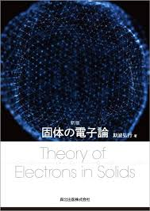
新版 固体の電子論新版 固体の電子論 (Electron Theory of Solids, New Edition)
斯波弘行, H. Shiba, 森北出版
大学院生が速習で固体物理学の基礎を勉強したいと思ったら、まずこの一冊を読むのがいいと思います。
とても基礎的な本ですが、Green 関数を用いず、摂動論だけで固体物理の王道ルート—— Mott 絶縁体、Fermi 液体、近藤効果、超伝導、遍歴電子系のスピン秩序——を 進んでいくのが本書の特徴です。摂動論しか使わないため学部3・4年生からでも 読めてしまうのに、この王道ルートを一通り歩めてしまう、とてもお得な本です。
スタートの敷居が低く、それでいて重要な固体物理の概念を総ざらいできる素晴らしい本ですが、 少し駆け足な部分もあるので、物理的な描像は他書で補うことが大切だと思います。
If a graduate student wants a fast track through the fundamentals of solid state physics, I would recommend reading this one book first.
It is a very basic book, but its distinctive feature is that it walks the royal road of solid state physics — Mott insulators, Fermi liquids, the Kondo effect, superconductivity, and spin order in itinerant electron systems — using nothing but perturbation theory, without Green's functions. Because only perturbation theory is required, even a third- or fourth-year undergraduate can read it, and yet you get to travel the entire royal road: a real bargain of a book.
The barrier to entry is low, and it still surveys the essential concepts of solid state physics — a wonderful book. It does move at a brisk pace in places, though, so it is important to supplement the physical picture with other references.
場の量子論Quantum Field Theory
Quantum Field Theory in a Nutshell
A. Zee, Princeton University Press (2nd ed., 2010)
学部生のときに輪読した場の量子論の教科書です。 経路積分から場の量子論に入門し、ファインマンダイアグラム、対称性の議論へと、 かなり初歩的なところから始まって、第I部だけで場の理論の全体像が見渡せる構成になっています。 続く第II部で Dirac 場、第III部でくりこみ理論へとテンポよく進むので、読んでいて楽しい本です。
第IV部では自発的対称性の破れが解説され、あわせて、少し毛色の違う量子異常——古典的には 対称性があり保存則が存在すると期待されるのに、量子化した理論ではその対称性が失われ、 保存量が存在しなくなる現象——も紹介されます。
第V部のテーマは場の理論と集団現象で、超流動・超伝導・有限温度の場の理論が扱われ、 物性物理学との関わりが深い部分です。続く第VI部でも凝縮系物理との関連が続き、 量子ホール流体やくりこみ群のフローなど、物性理論で重要になる概念を効率よく学べます。
A QFT textbook I read in a study group as an undergraduate. It introduces field theory through the path integral and moves on to Feynman diagrams and symmetry arguments, so that Part I alone gives you a bird's-eye view of the whole subject starting from the very basics. Part II covers the Dirac field and Part III renormalization at a brisk, enjoyable pace.
Part IV discusses spontaneous symmetry breaking, together with quantum anomalies — phenomena where a symmetry expected classically, along with its conservation law, fails to survive quantization.
Part V turns to field theory and collective phenomena — superfluidity, superconductivity, and finite-temperature field theory — with deep ties to condensed matter physics, and Part VI continues in this direction, efficiently covering concepts essential to condensed matter theory such as quantum Hall fluids and renormalization-group flows.
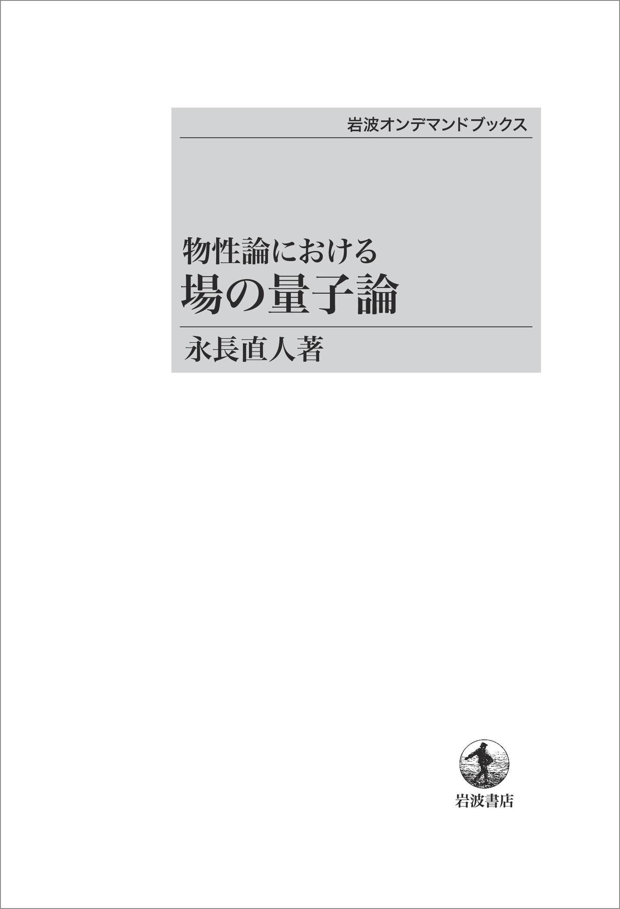
物性論における場の量子論物性論における場の量子論 (Quantum Field Theory in Condensed Matter Physics)
永長直人, N. Nagaosa, 岩波書店（岩波オンデマンドブックス）
修士1年のときの輪読の教科書でした。場の量子論を用いた物性物理学の本ですが、 主役は多体摂動論ではなく経路積分です。物性物理学の諸現象——特に第4章・第5章で扱われる クーロンガス、Bogoliubov 超流動、超伝導——を経路積分形式で理解していく流れは とても参考になります。
そして何より、これほど理論色の強い本でありながら、言葉での説明がとても多いのが特徴です。 時折比喩を交えながら、数式の意味や得られた結論を噛み砕いてくれて、 「これが理論物理学だ」と思えるくらい、物理現象と数式と自分のイメージが 一緒に育っていく、とてもいい本でした。
3.4の格子ゲージ理論と閉じ込め問題は、私の博士課程での研究（量子スピン液体）でも 基礎的な考え方になっているので、J. B. Kogut による格子ゲージ理論の入門的レビュー論文と あわせて何度も読み返しました。
第6章の量子ホール液体と Chern-Simons ゲージ場も、何回読んでも面白いと思える 説明・論理の構成になっています。分数量子ホール効果と、その低エネルギー有効理論としての Chern-Simons 理論に魅了されたのは、この本のおかげです。
This was our reading-group textbook in my first year of the master's course. It is a book on condensed matter physics built on quantum field theory, but the protagonist is the path integral rather than many-body perturbation theory. The way it develops phenomena of condensed matter — notably the Coulomb gas, Bogoliubov superfluidity, and superconductivity in Chapters 4 and 5 — in the path-integral language is highly instructive.
Above all, for such a theory-heavy book it is remarkably generous with verbal explanations. It breaks down the meaning of the equations and their conclusions, sometimes with the help of analogies, so that physical phenomena, formulas, and your own mental picture grow together — the kind of book that makes you feel "this is theoretical physics."
Section 3.4 on lattice gauge theory and the confinement problem has become a foundational idea in my own Ph.D. research on quantum spin liquids, and I have returned to it many times together with J. B. Kogut's introductory review on lattice gauge theory.
Chapter 6 on quantum Hall liquids and the Chern-Simons gauge field is constructed so well that it stays interesting no matter how many times you read it. It is thanks to this book that I fell for the fractional quantum Hall effect and its low-energy effective description, Chern-Simons theory.
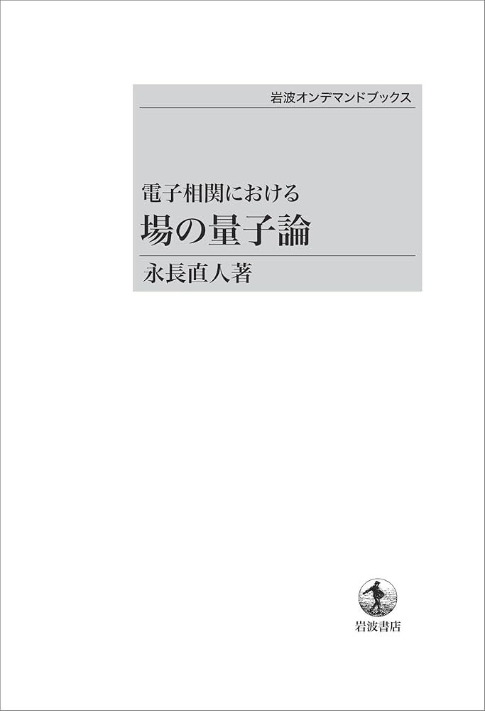
電子相関における場の量子論電子相関における場の量子論 (Quantum Field Theory in Strongly Correlated Electronic Systems)
永長直人, N. Nagaosa, 岩波書店（岩波オンデマンドブックス）
上で紹介した『物性論における場の量子論』の知識を前提とした、より高度な内容を扱う本です。 全章どれもわかりやすく刺激的な内容ばかりですが、特に第3章と第4章は一読の価値があります （本当は何度でも読み返すのがよいと思います）。
第3章は、強相関電子系のエッセンスが50ページに濃縮されています。 第4章は「局所的電子相関」と題して、近藤問題から動的平均場理論まで丁寧に理論が 展開されます。局所的電子相関は、一次元系と並んでよく理解されている理論ですが、 より一般の難しい強相関電子系を考察する際に、重要な示唆を数多く与えてくれます。
これは趣味嗜好やバックグラウンドに強く依存する話だと思いますが、私は研究で 行き詰まったり気持ちが落ちたりしたとき、この本の第3章や第4章を読んで、 難しいことに挑戦するワクワクを思い返すようにしています。その意味で、 精神安定剤のような役割をしてくれている、とても気に入っている本です。
ただし、第1章と、第2章の2-1・2-2をこの本だけで理解するのは難しいと思うので、 川上・梁『共形場理論と1次元量子系』や藤本・川上『量子多体系の物理』あたりと 併読することをおすすめします。
A more advanced book that presupposes the material of 物性論における場の量子論 introduced above. Every chapter is lucid and stimulating, but Chapters 3 and 4 in particular are worth reading (in truth, worth rereading many times).
Chapter 3 condenses the essence of strongly correlated electron systems into some 50 pages. Chapter 4, titled "Local electron correlation," develops the theory carefully from the Kondo problem to dynamical mean-field theory. Local electron correlation is, alongside one-dimensional systems, one of the best-understood corners of the field, and it offers many important insights when tackling more general, harder problems in strongly correlated electrons.
This surely depends on one's taste and background, but when my research stalls or my spirits drop, I read Chapters 3 and 4 of this book to remind myself of the thrill of taking on hard problems. In that sense it serves as a kind of tranquilizer for me — a book I am very fond of.
That said, Chapter 1 and Sections 2-1 and 2-2 of Chapter 2 are hard to digest from this book alone; I recommend reading them alongside Kawakami & Yang, 共形場理論と1次元量子系, and Fujimoto & Kawakami, 量子多体系の物理.
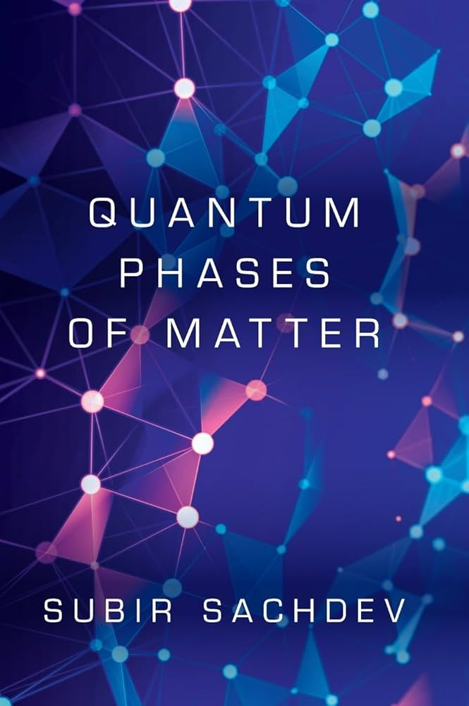
Quantum Phases of Matter
S. Sachdev, Cambridge University Press
この本がなかったら博士課程の研究が始まらなかったかもしれない、 というレベルでお世話になった本です。
お気に入りの Schwinger boson 法そのものについては、まず原著論文の D. P. Arovas and A. Auerbach, Phys. Rev. B 38, 316 (1988) を読むのが 一番教育的だと思いますが、本書は、その先にある格子ゲージ理論的な見方から、 強相関電子系・量子スピン液体の広がりとその可能性を見据えることのできる本です。
とりわけ Part IV の、fractionalization と band topology を結びつける部分が 私の興味と重なっていたので、Part IV までを一通り読みました。 この Part IV の考え方を Schwinger boson 法に応用して熱ホール効果を計算する、 といったことも研究テーマの一つとして興味を持っています。
2025年にカナダ・モントリオールで開かれた国際会議 SCES で著者の Subir Sachdev 先生のトークを拝聴しましたが、correlated metals に対してもこうした考え方を 深めておられて大変興味深く、本当は Part V も読みたいと思っています…。
This book helped me to the point that, without it, my Ph.D. research might never have gotten off the ground.
For the Schwinger boson method itself — my favorite tool — the most instructive first read is still the original paper, D. P. Arovas and A. Auerbach, Phys. Rev. B 38, 316 (1988). What this book offers lies beyond that: a lattice-gauge-theoretical vantage point from which you can survey the breadth and promise of strongly correlated electrons and quantum spin liquids.
Part IV, which ties fractionalization to band topology, overlapped squarely with my own interests, so I read the book through Part IV. Applying the ideas of Part IV to the Schwinger boson method to compute thermal Hall effects is one of the research directions I am interested in.
At SCES 2025 in Montreal I attended a talk by the author, Subir Sachdev, who is extending this way of thinking to correlated metals — fascinating, and a reminder that I really ought to read Part V as well...
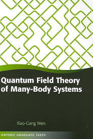
Quantum Field Theory of Many-Body Systems
X.-G. Wen, Oxford University Press
この本も、上で紹介した S. Sachdev 著 Quantum Phases of Matter と同じく、 私の博士課程の研究に必要な概念を学ぶうえでとても重要だった教科書です。
量子スピン液体の分類学に PSG（Projective Symmetry Group）という群論的な 考え方がありますが、それについて丁寧に書かれた本です。PSG そのものは本当に 「分類学」の仕事になってしまうので（PSG 解析をしただけで一つの論文になります）、 分類学そのものよりもスピンダイナミクスなどの動的な物性に興味がある私は PSG の研究はしていませんが、この本のおかげで先行研究の理解度が圧倒的に 増したのは事実です。さらに、スピンダイナミクスの研究においても重要になる IGG（Invariant Gauge Group）という概念も、この教科書で学べます。
とてもよく書かれた教科書ですが、ある意味で、著者の思考や信念のようなものが 強く感じられます。自分もこんな、物理に対する強い信念を持ちたいなと 思わせてくれる本でした。読んだあとしばらくの間、「物理学の変換はすべて ゲージ変換なのではないか」と思ってしまうくらい、多大な影響を受けた一冊です。
Like Sachdev's Quantum Phases of Matter above, this textbook was essential for learning the concepts my Ph.D. research is built on.
In the taxonomy of quantum spin liquids there is a group-theoretical framework called the PSG (Projective Symmetry Group), and this book treats it with great care. PSG analysis is classification work in the truest sense — a PSG analysis alone can constitute a paper — and since my own interest lies in dynamical properties such as spin dynamics rather than in taxonomy itself, I have not pursued PSG research. Still, this book unquestionably deepened my understanding of the literature by an order of magnitude. It also teaches the IGG (Invariant Gauge Group), a concept that matters for studies of spin dynamics as well.
It is a beautifully written textbook, and at the same time you can feel the author's own thinking and convictions running through it — the kind of book that makes you want to hold such strong convictions about physics yourself. For a while after reading it, I caught myself thinking that perhaps every transformation in physics is a gauge transformation. That is how much this book influenced me.
トポロジカル物性Topological Phases of Matter
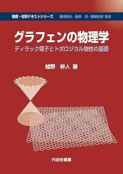
グラフェンの物理学 —ディラック電子とトポロジカル物性の基礎—グラフェンの物理学 (Physics of Graphene: Dirac Electrons and the Basics of Topological Phases)
越野幹人, M. Koshino, 内田老鶴圃（物質・材料テキストシリーズ）
とてつもなくわかりやすい本です。「グラフェンの物理学」というタイトルを見て、 グラフェンは自分の研究分野じゃないからと読まないのは、とてももったいない。 第一に、自分の分野でなくてもグラフェンは十分に楽しめます。 そして、こちらの理由の方が重要ですが、本書はグラフェンを大きな軸足にしつつ、 グラフェンとは無関係の物質にも使えるような、幅広い固体物理学の知識が拾える 構成になっています。
第2章で固体物理の基礎としてのバンド理論、第3章で電気伝導の理論、 第4章で磁場下での Landau 準位・量子ホール効果・軌道反磁性——と、 ありがたいくらい基礎から固体物理学を振り返ってくれます。 グラフェン中の低エネルギー電子は、運動量（波数）に線形な Dirac 分散と呼ばれる 分散関係を持ち、これに起因して、電気伝導・光学応答・磁場中の物性の振る舞いが、 我々のよく知っている電子系とは質的に異なります。本書の至れり尽くせりな点は、 そうした比較の前に、前提となる一般論を提示してくれることです。 例えば電気伝導であれば、グラフェンの電子とは関係のないレベルで成り立つ 線形応答理論の一般公式から始めてくれます。おかげで、どこに・どのような原因で グラフェンの特異性が現れるのかが分かりやすく、固体物理の知識そのものも深まります。
個人的に、電気伝導・光学応答の部分は浅野先生『固体電子の量子論』と親和性が高いので、 浅野先生の理論を学んだ後の応用例として本書の計算式をフォローするのがおすすめです。 本書には浅野先生の本では書かれていない Boltzmann 方程式を用いた記述もあるため、 両者は相補的です。
そして何よりわかりやすく教育的なのが、第5章から第7章のトポロジカル物性の 基礎概念の説明です。私が勉強した頃には本書はまだ出版されていませんでしたが、 いま初学で学ぶとしたら、第5章で Berry 位相の概念を学び、 第6章と第7章の結果を数値計算で再現するところから始めると思います。 それくらいわかりやすく書かれています。 もちろん趣味嗜好の問題はありますが、私は、SSH模型のもつトポロジカルな起源を Wannier 軌道中心と edge 状態から理解するのが一番教育的な整理の仕方だと 思っているので、越野先生のこの論理展開がとても気に入っています。 何度考えても、初学者がつまずかずにすんなり理解できるのは、この道筋だと思うのです。
Astonishingly clear. It would be a great waste to skip this book just because the title says "physics of graphene" and graphene is not your field. First, graphene is plenty enjoyable even if it is not your research area. Second — and this is the more important reason — while graphene is the book's main axis, it is structured so that you pick up a broad range of solid state physics applicable to materials that have nothing to do with graphene.
Chapter 2 reviews band theory as the foundation of solid state physics, Chapter 3 the theory of electrical conduction, and Chapter 4 Landau levels, the quantum Hall effect, and orbital diamagnetism in a magnetic field — a gratifyingly thorough refresher from the ground up. Low-energy electrons in graphene follow the Dirac dispersion, linear in momentum, which makes their conduction, optical response, and behavior in magnetic fields qualitatively different from the electron systems we know well. The book's generosity lies in presenting the general theory before any such comparison: for conduction, say, it starts from the general formulas of linear response theory, valid independently of graphene. As a result you see clearly where, and for what reason, graphene's peculiarities emerge — and your solid state physics deepens along the way.
Personally, I find the conduction and optical-response parts highly compatible with Asano's 固体電子の量子論: my recommendation is to follow this book's calculations as applications after learning the theory from Asano. This book also offers a Boltzmann-equation treatment absent from Asano's, so the two are complementary.
Above all, the explanation of the basic concepts of topological phases in Chapters 5–7 is wonderfully clear and pedagogical. The book had not yet been published when I first studied these topics, but if I were starting today, I would begin by learning the concept of the Berry phase in Chapter 5 and then reproducing the results of Chapters 6 and 7 numerically — it is that accessible. Tastes differ, of course, but I regard understanding the topological origin of the SSH model through Wannier centers and edge states as the most instructive way to organize the theory, which is why I am so fond of Koshino's line of reasoning. However many times I think it over, this is the path a beginner can walk without stumbling.
その他Miscellaneous
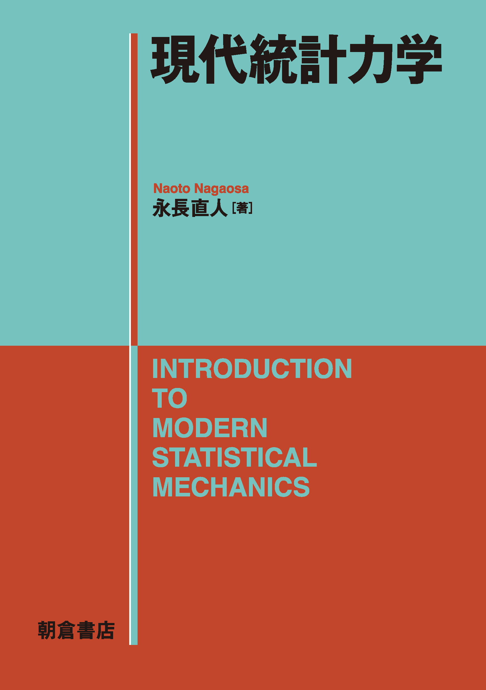
現代統計力学現代統計力学 (Introduction to Modern Statistical Mechanics)
永長直人, N. Nagaosa, 朝倉書店
量子力学と統計力学を一通り学んだ人が、タイトルどおり「現代」の統計力学を学ぶうえで とても参考になる本です。「現代」が何を含意しているのかは分かりませんが、 私としては、非平衡統計力学の進展と、情報理論との接続——この二つが 「現代」統計力学と呼ばれるものに相当するのではないかと思っています。
前者はこの本の第III部・第IV部に相当し、現代の我々の理解からは もはや基礎事項になりつつある非平衡統計力学の真髄をまとめてくれています。
後者については、第I部で情報と熱力学の関係や量子もつれの基礎的な内容が紹介されています。 また、本書で明示的に言及されているわけではありませんが、第IV部の動的臨界現象や ランダム系（スピングラス）の問題は量子情報とも繋がりが深く、 量子情報の論文を読む際には第IV部が前提知識になると思います。
For anyone who has been through quantum mechanics and statistical mechanics, this is a very helpful guide to "modern" statistical mechanics, as the title promises. I am not sure exactly what "modern" is meant to imply, but to my mind it corresponds to two things: the progress of nonequilibrium statistical mechanics, and the connection to information theory.
The former corresponds to Parts III and IV of this book, which distill the essence of nonequilibrium statistical mechanics — by now becoming standard material in our modern understanding.
As for the latter, Part I introduces the relation between information and thermodynamics and the basics of quantum entanglement. Moreover, though the book does not say so explicitly, the dynamical critical phenomena and random systems (spin glasses) of Part IV are deeply connected to quantum information — I would count Part IV as prerequisite knowledge for reading quantum information papers.
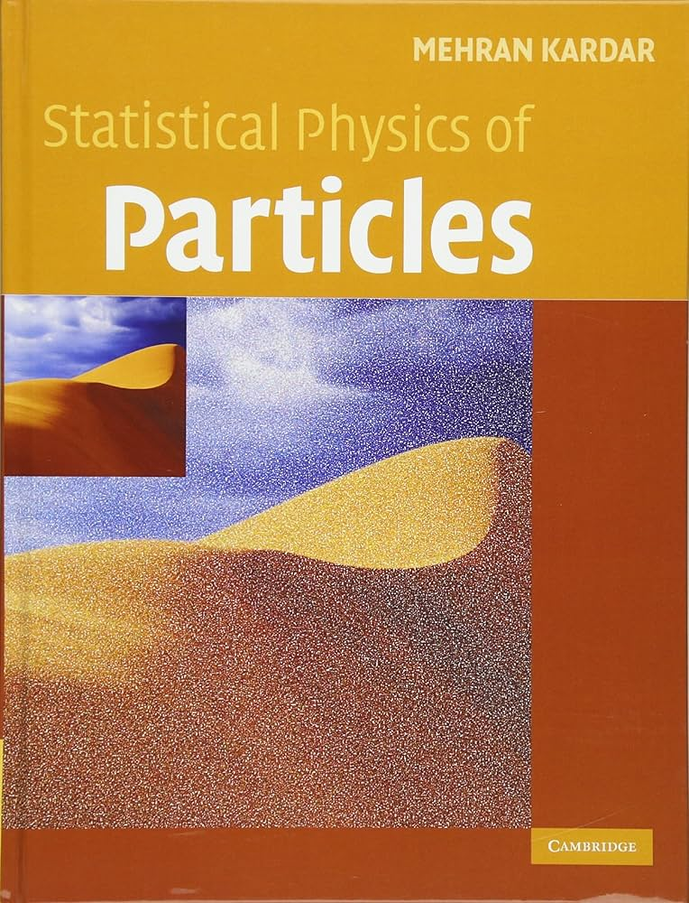
Statistical Physics of Particles
M. Kardar, Cambridge University Press
尊敬している物理学者、Mehran Kardar 先生による熱力学・統計力学の教科書です。 時系列としては、もう一冊の Statistical Physics of Fields を読んでとても感動し、 Kardar 先生のほかの本も読みたくなって購入した本です （MITの大学院講義がもとになっています）。
そのため、この本はつまみ読みしかしていません。ただ、つまみ読みしただけでも 色々な発見があり、大変面白い本です。熱力学や統計力学で、これ以上何か得られるものが あるのか？と思うかもしれませんが、第3章では BBGKY 階層や、名前だけはよく聞く H定理が解説されています。こうした観点から眺めてみると、マクロな現象における 不可逆性の種のようなものが少し垣間見えた気がして、嬉しくなったりします。
A textbook on thermodynamics and statistical mechanics by Mehran Kardar, a physicist I deeply admire. Chronologically, I read his other book, Statistical Physics of Fields, was thoroughly impressed, and bought this book because I wanted to read more of his writing (it grew out of his MIT graduate course).
For that reason I have only skimmed it — but even skimming turns up one discovery after another. You might wonder what more there is to gain from thermodynamics and statistical mechanics, yet Chapter 3 covers the BBGKY hierarchy and the H-theorem (which everyone has heard of, if only by name). Viewed from this angle, I felt I caught a glimpse of the seeds of irreversibility in macroscopic phenomena — a quietly delightful moment.
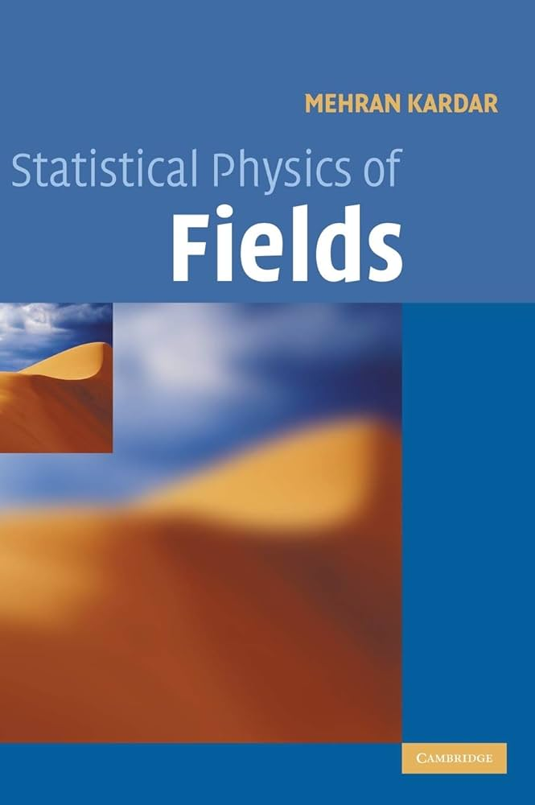
Statistical Physics of Fields
M. Kardar, Cambridge University Press
この本を読んで、Mehran Kardar 先生のファンになりました。 Landau-Ginzburg 理論という基礎から入るのですが、この基礎の段階ですら こんなに学ぶべきことがあるのかと圧倒された覚えがあります。
そこから Goldstone モード、感受率、揺らぎ、Ginzburg criterion へと進んでいきます。 Ginzburg criterion は平均場理論（鞍点法）の限界を教えてくれるもので、 こうした理解のもとで「なぜ従来型超伝導は BCS 理論（＝平均場理論）で説明できるのに、 銅酸化物高温超伝導では平均場理論が破綻するのか」といったことを考えるのは とても大事だと改めて実感しました。「電子相関が弱ければ平均場でよく、 強ければ平均場を超える必要がある」という、それっぽいけれど正確とは言えない 表面的な理解を超えた先に見える物理的な世界観があること、そして、 現象論的な Landau-Ginzburg 理論でその本質が垣間見えることに感動しました。
さらにスケーリング仮説、繰り込み群へと進んでいきますが、この本のおかげで 繰り込み群が大好きになりました。長さスケールが消えた世界で繰り広げられる臨界現象、 そのユニバーサリティクラス、さらにそれを特徴づける臨界指数の間に成り立つ関係式が 自然に導かれていく様子は感動的です。
そして何と言っても本書の見どころは、非平衡統計力学の真骨頂である KPZ 理論が Kardar 先生自身の言葉で書かれていることです。§9.5 Non-equilibrium dynamics of open systems と §9.6 Dynamics of a growing surface は感動的です。 MIT に行かなくても Kardar 先生の素晴らしい物理観を分けていただける—— 感謝しかありません。
This is the book that made me a fan of Mehran Kardar. It starts from the basics with Landau-Ginzburg theory, and I remember being overwhelmed that even at this foundational stage there was so much to learn.
From there it proceeds to Goldstone modes, susceptibilities, fluctuations, and the Ginzburg criterion. The Ginzburg criterion tells you the limits of mean-field theory (the saddle-point method), and with that understanding it becomes deeply worthwhile to ask why conventional superconductivity is captured by BCS theory — a mean-field theory — while mean-field theory breaks down for the cuprate high-temperature superconductors. What moved me is that there is a physical worldview visible beyond the plausible-sounding but not quite accurate surface-level story that "weak correlations allow mean field, strong correlations require going beyond it" — and that the phenomenological Landau-Ginzburg theory already lets you glimpse its essence.
The book then moves on to the scaling hypothesis and the renormalization group — and it is thanks to this book that I came to love the RG. It is moving to watch critical phenomena unfold in a world without length scales, and to see universality classes and the relations among the critical exponents that characterize them emerge so naturally.
Above all, the highlight of this book is that KPZ theory — a crowning achievement of nonequilibrium statistical mechanics — is presented in Kardar's own words. Sections 9.5 (Non-equilibrium dynamics of open systems) and 9.6 (Dynamics of a growing surface) are breathtaking. To receive a share of Kardar's magnificent view of physics without ever setting foot in MIT — I have nothing but gratitude.
趣味（物理以外）For Fun (Non-Physics)
医者が教えるサウナの教科書医者が教えるサウナの教科書 (A Doctor's Guide to Sauna)
加藤容崇, Y. Kato, ダイヤモンド社
研究が忙しくて最近は行けていないのですが、サウナでいわゆる「ととのう」のが好きです。 ただ、（医学的に）正しい「ととのい方」があるということで、 この本を片手にサウナに通っていた時期がありました。
Research has kept me too busy to go lately, but I love the sauna experience the Japanese call totonou — that perfectly reset feeling. It turns out there is a (medically) correct way to achieve it, and there was a period when I frequented saunas with this book in hand.